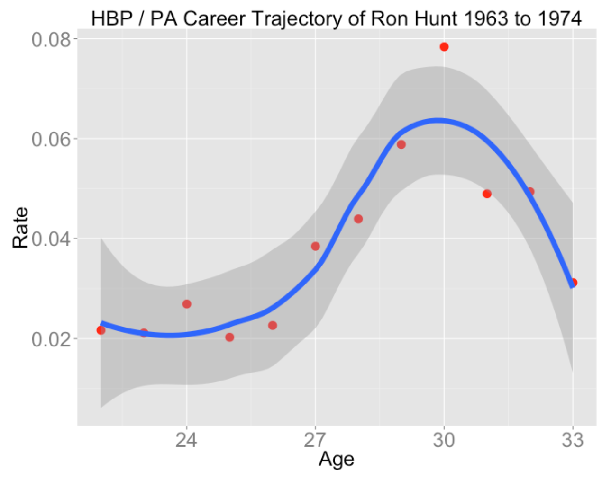
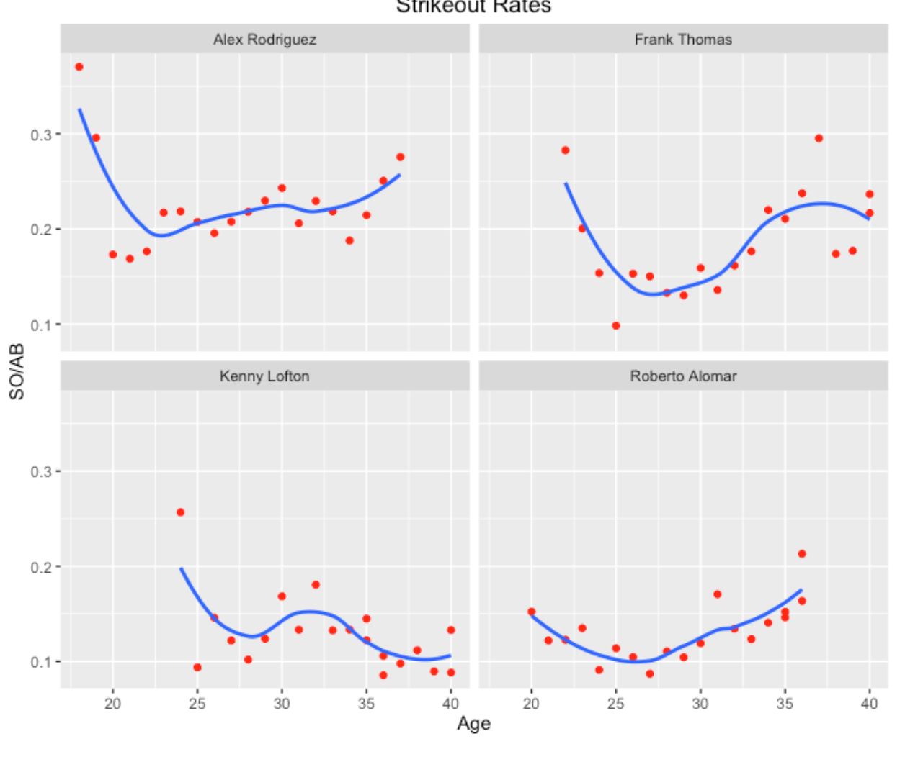
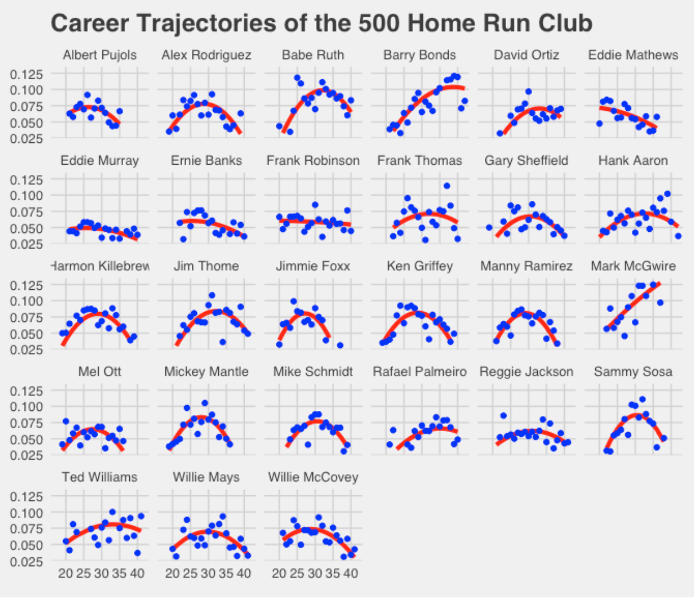
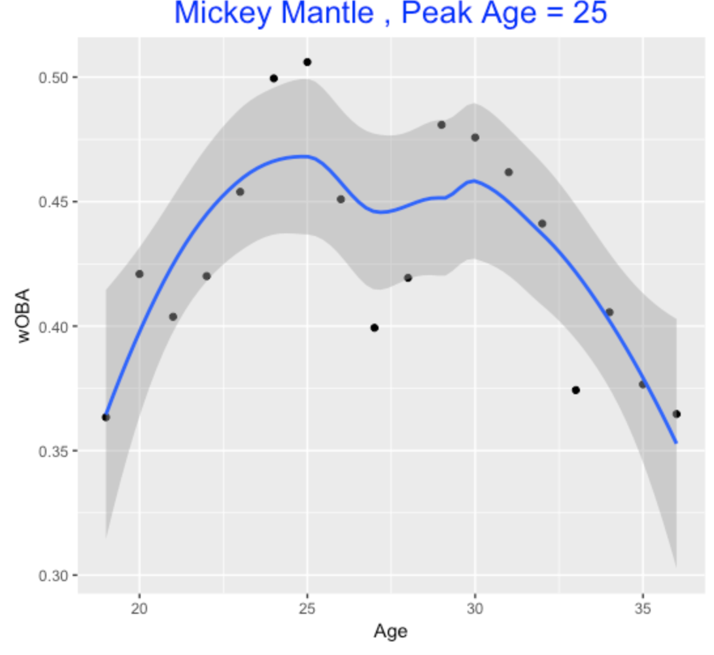

Career Trajectories
1 Introduction
This article contains many of the blog posts from Exploring Baseball Data Using R (https://baseballwithr.wordpress.com/) devoted to a player’s career trajectory, a plot of some measure of performance against season or the player’s age.
Section 2 describes the use of a R function to plot a career trajectory for a particular player of interest. These graphs are helpful in player comparison in Section 3 where one puts several career trajectories on a single frame. A batting average can be decomposed into several components – plots of the career trajectories of these component measures described in Section 4 are helpful for understanding the strengths and weaknesses of players. A special Shiny app has been written to facilitate the construction of these career trajectory graphs. Section 5 describes the Shiny app and Section 6 uses the app to compare a Hall of Fame candidate with several of his contemporaries. A quadratic smoothing curve is helpful in summarizing a player’s career trajectory. The broom package described in Section 7 is useful in summarizing these quadratic fits for many players. One output of these smooths are estimates at the ages where the players achieve peak performance. Sections 8 and 9 focus on learning when baseball players achieve their peaks. One takeaway from Section 9 is that the age of peak performance has been increasing in recent baseball seasons.
2 Plotting Career Trajectories
I have been fascinated by players’ career batting and pitching trajectories over the years and Chapter 8 of our book talks about plotting and modeling these trajectories. This post describes a useful function to plot the career trajectory of a hitting rate for any player in MLB history.
The data frame Batting in the Lahman package contains the season batting data. There is some setup to get the data in a useful format.
The Batting data frame has separate hitting statistics for each team for a player in a given season. I use the summarise() function in the new dplyr package to collapse over the stint variable. (By the way, dplyr is much faster than plyr for this type of operation.) Using the merge() function, I add last name, first name, first year, last year, and birthyear variables to the Batting data frame. A new plate appearances variable is defined – before I do this, I convert missing values of SF and SH to zero.
Now I’m ready to write a plot.trajectory() function. There will be four inputs:
- The name of the batter in quotes. (One can choose any batter in the Lahman database.)
- The numerator of the rate statistic we want to graph – for example, if we want to plot home run rates, then this numerator would be “HR”.
- The denominator of rate stat (typically “AB” or “PA”).
- In cases where there are multiple players with the same name like Ken Griffey or Tony Gwynn, the input num gives the number of the player that you are interested in. (For example, if you want to plot the career trajectory of Junior Griffey, use num = 2.)
I use the ggplot2 package to construct the plot and use a loess smoother to show the general pattern of the career trajectory.
Here is the code. First install the packages Lahman , dplyr , devtools , and ggplot2 . Then you can read in the setup code and the function by typing:
library(devtools)
source_gist(9043429)Let illustrate using this function to plot some trajectories. Mike Schmidt is one of my baseball heros – I can graph his home run trajectory by typing:
plot.trajectory("Mike Schmidt", "HR", "AB")Clearly, Schmidt peaked in home run hitting about age 30 (that’s when the Phillies won their first World Series).
Instead suppose we look at Schmidt’s strikeout trajectory.
plot.trajectory("Mike Schmidt", "SO", "AB")I believe Schmidt shortened his swing later in his career which led to a decrease in strikeout rates.
Ron Hunt is well-known as the “hit by pitch king”. How does Hunt’s HBP rate change over his career?
plot.trajectory("Ron Hunt", "HBP", "PA")
I believe there is some ability aspect of getting hit by a pitch (it isn’t just luck driven), and Hunt seemed to peak in this ability around age 30.
Anyway, it is fun to explore these trajectories for your favorite players. I also converted this function to a Shiny application that you can see by typing:
library(shiny)
shiny::runGist('9053425')3 Comparing Career Trajectories
In the last post, I illustrated plotting a career trajectory of a batting rate of any player in MLB history. Let’s consider a current problem where looking at trajectories may be helpful. The 2014 Phillies are hopeful that Ryan Howard will overcome his last two seasons with injuries and get back to hitting a lot of home runs. Given that Howard is 34 years old, is it reasonable to believe that he’ll come back?
After I did some set up work, I illustrated last week using a R function plot.trajectory() that will display the trajectory of a player’s rate statistic. In the R script displayed here, I modify the function so it can (using the plot=FALSE argument) output a data frame with the player’s name, age, and rate for all seasons.
Let’s compare the trajectory of Ryan Howard’s home run rates with the trajectories of ten similar players. Baseball-reference gives a list of ten players who are most similar (using Bill James’ similarity score) to Howard through age 33. I use the rbind function to merge vertically the data frames of the trajectory data for these 11 players. (I add the 2013 data to Howard since the Lahman package only goes through the 2012 season.)
d <- NULL
names <- c("Ryan Howard", "Richie Sexson",
"Cecil Fielder", "Mo Vaughn",
"Mark McGwire", "Norm Cash",
"Jay Buhner", "Willie Stargell",
"Jason Giambi", "Frank Howard",
"David Justice")
for (j in 1:11)
d <- rbind(d, plot.trajectory(names[j],
"HR", plot=FALSE))
d <- rbind(d, data.frame(Player="Ryan Howard",
Age=33,
Rate=11/286))Using the ggplot2 package, it is easy to compare the home run rate trajectories of these 11 players using separate panels on the same scale. Smoothing (loess) curves are added to these plots to see the basic trajectory patterns.
library(ggplot2)
ggplot(d, aes(Age, Rate)) +
geom_point(size=3, color="red") +
geom_smooth(method="loess", size=1.5) +
facet_wrap(~ Player, ncol=4) +
ylab("HOME RUN RATE") + xlab("AGE") +
theme(strip.text = element_text(size = rel(2)))All of the R code for this example can be found here. One can run this example (assuming packages devtools, Lahman, dplyr, and ggplot2 are installed) by typing
library(devtools)
source_gist(9220828)Looking at Ryan Howard’s home run rate trajectory (upper left), clearly his rate has been in free fall since his peak at age 26 – part of this decline is attributed to injuries. How does he compare with other “similar” hitters?
Ryan’s decline is similar to that of Richie Sexson, Cecil Fielder, and Jay Buhner who all experienced significant declines in their 30’s. Some hitters like Norm Cash and David Justice were relatively stable in their home run rates in their 30’s. Some players like Willie Stargell and Jason Giambi had long careers with gradual declines in their home rate rates near the end of their careers. Only one player, Mark McGwire, shows a boost in home rate in one’s 30’s, but I think we suspect the reason for this boost.
From looking at these trajectories, I doubt that Ryan Howard will hit home run at a much higher rate than, say 0.05 (five percent). Actually, I think that the Phillies would be thrilled if Ryan could hit 30-35 home runs in 2014.
4 Plotting Career Trajectories of Component Rates
Although sabermetricians dismiss the batting average \(H / AB\) as a poor measure of batting performance, the media and public still talks about batting average a lot. So I think that instead of dismissing this measure, we should look more carefully what is learned from player’s batting average.
I have a new paper that focused on a breakdown of a batting average. One can represent the batting average \(BA = H / AB\) as the following: \[ BA = (1 - SO.Rate) \times (HR.Rate + (1 - HR.Rate) \times BABIP) \]
where the \(SO.Rate = SO / AB\), \(HR.Rate = HR / (AB - SO)\), and the batting average on balls in play rate is \(BABIP = (H - HR) / (AB - SO - HR)\). What is interesting is that some of these “component rates” such as \(HR.Rate\) and \(SO.Rate\) are less affected by chance variation than other rates such as \(BABIP\). Using Bill James’ terminology, a \(SO.Rate\) is more persistent than, say a \(BABIP\) rate, since the \(SO.Rate\) in one season is more predictive of a \(SO.Rate\) in the following season.
This observation suggests that we might learn more about the career performance of a player (or compare career performances for several “similar” players) by looking at the career trajectories of these different rates graphed against age. Based on my work with these different rates, I think one would see stronger patterns in a player’s strikeout rates than in a player’s BABIP rates graphed against age.
This thinking motivated me to write a R function to compare players who have similar career batting averages during the same era. I won’t go into the details of the R code here, but the gist site contains some preliminary R work and a special function compare_rates does the graphing.
We are going to compare component rates for all players who are within AVG_eps of a target career batting average in at least Career_target career AB and who had a mid career year (variable target_year ) within an error of Career_eps . In this way, we are comparing players with long careers who had approximately the same career batting average during the same baseball era. By default, I set AVG_eps = .002 , AVG_target = .300 , Career_target = 3000 , and Career_eps = 4 , although one can easily change these inputs to get different groups of similar players.
Assuming you have the Lahman, dplyr, and ggplot2 packages installed, the following code will source in the code from the gist site and read in the function compare_rates().
library(devtools)
source_gist("d051a9b88faaf4bf2e27")Okay, we’re ready to try out the function. I’ll start with finding and comparing players with a lifetime batting average of .300 who played in the vicinity of the 2000 season. As the plots show, the four similar players are A-Rod, Frank Thomas, Kenny Lofton, and Roberto Alomar (these were very different types of hitters, but they all had a career AVG close to .300 during the same baseball era.)
compare_rates(2000)
What do we learn from these graphs?
Generally, A-Rod and Thomas had higher strikeout rates than Lofton and Alomar, although Thomas had a relatively low strikeout rate in the early part of his career. As one might expect, strikeout rates tend to increase towards the end of a player’s career.
Obviously, A-Rod and Thomas had higher home run rates. A-Rod tended to peak at a young age and Thomas had an interesting bimodal pattern to his trajectory with two peaks. Lofton and Alomar actually had larger home run rates in their early 30’s.
Looking at the hit-in-play rates, one notices more season to season variation (less persistence using James’ terminology) in these rates. This is especially obvious for Lofton and Thomas, although the smooths indicate some general career patterns in these graphs.
For a second example, I am looking at the list of 2016 Hall of Fame nominees. I notice Alan Trammell who had a .285 career batting average and his mid career year was about 1987. This motivates me to use this function with inputs 1987, a target AVG of .285, and I adjusted the value of AVG_eps to get a small group of similar players. As the graph shows, the similar players to Trammell are Lenny Dykstra, Robin Yount, Ryne Sandberg, and Willie Wilson.
compare_rates(1987, AVG_target=.285, AVG_eps=.001)
I think the strong persistence of strikeout rates for each player is clear, although each player tends to strikeout more towards the end of his career.
Home run rates for three players show peaks in the 25-30 age range. Clearly Wilson did not hit many home runs in his career.
Comparing with the strikeout rate trajectories, note that the BABIP trajectories show much more noise or up-and-down variation. For example, although Trammell’s career BABIP was about .300, it varied from .260 to .340 across seasons.
One message from this exploration is that players with similar career batting averages actually can be very different in their strikeout, home run, and hit-in-play tendencies. Also one can learn more about peak batting performance by looking at these component rates rather than looking at career trajectories of batting average. Hitters have many dimensions and a single graph is insufficient for learning about their career performances. Last, these career trajectory graphs illustrate the notable chance variability of BABIP and one learns more about a player’s talent from looking at his home run rate or strikeout rate.
5 Shiny App to Compare Hit Trajectories
5.1 Introduction
I recently received The Baseball 100 book by Joe Posnanski as a Christmas gift from my son. It’s a great read with interesting stories about the great players in baseball. Posnanski, like most writers, uses statistics such as total WAR to compare great players. But I believe that career measures such as total WAR, career HR, or career AVG are really insufficient in understanding a player’s career. To gain a better understanding of a player’s career, one needs to look at his season to season statistics. One can get a quick understanding of a player’s career by graphing some measure against the season or player’s age – we call this graph the player’s career trajectory.
To compare two players, it is helpful to graph the players’ career trajectories on a single graph where the players are distinguished by the plotting color. Also it is helpful to add smoothing curves to the graph to show the basic patterns.
One important point about comparing players. Generally it doesn’t make sense to compare statistical accomplishments of players from different eras, say Babe Ruth and Barry Bonds, since MLB has gone through so many changes in its history. A .350 batting average has a different meaning in the 1930 season than it would have in the 2020 eason, and home runs were rare during the dead ball era. But I think it is helpful to compare career trajectories of contemporary players that played during the same baseball era. In this post I’ll describe the construction and use of a Shiny app that allows comparison of career batting trajectories for any two contemporary players of interest. One motivation for this work is to illustrate the use of dynamic UI in Shiny that lets one have input values that depend on the values of other inputs. I’ll illustrate the use of this app to compare career trajectories of two of the 2022 Hall of Fame nominees.
5.2 Dynamic UI
A Shiny application consists of two components, a user interface function with all of the input controls and a server function that performs the computation and graphs. In all of the Shiny apps discussed in this blog, there has been a separation between the user interface and server functions in the sense that the user interface (UI) does not react to anything done in the server function. Sometimes this is not desirable – in this career trajectory application I am interested in seeing an player input menu defined by values from other inputs. Fortunately, Chapter 10 of Wickham’s Mastering Shiny text describes how one can have “dynamic UI” in Shiny by the use of special update functions placed in the server function that allow one to modify values of input controls.
Here is an example of the updateSelectInput() function that modifies the selectPlayers() input with changes to the input$midyear variable.
observeEvent(input$midyear, {
updateSelectInput(inputId = "player_name1",
choices = selectPlayers(input$midyear, 10,
input$minpa)$Name)
})By using several of these updateSelectInput() functions in the server() function, I can get the desired dynamic input menu.
5.3 The Shiny App
Here is a snapshot of the Shiny career trajectory app. First one decides on players from a baseball era to explore by selecting values of the player’s Mid Year and the minimum number of career plate appearances. In this example below, by the inputs, note that I am focusing on the steroids era (Mid Year = 2000) and batters with at least 5000 career PA. The Select First Batter and Select Second Batter inputs display menus including all players whose Mid Year is within 10 years of the target (between 1990 and 2010) and whose career PA exceeds the inputted value of 5000. Here I select two contemporary sluggers, Barry Bonds and Junior Griffey. Finally, I decide on which measure to display (here I select wOBA) and whether to plot the measure against the season or the player age (here I select season). One sees graphs of each player’s wOBA career trajectory together with loess smoothing curves to show the general pattern. Note that Bonds and Griffey display similar career trajectories until the 1999 season. After that season, Griffey displays the familiar decreasing pattern in wOBA in his 30’s. In contrast, Bonds displays a sudden increase in wOBA in his mid-30’s starting with the 2000 season. In this app, I am using loess smoothing with PA as weights – note that the Griffey smoother ignores the small 2010 wOBA value where he had a small number of PA.
5.4 Try Out the Shiny App
A live version of this Shiny app is available at https://bayesball.shinyapps.io/careertrajectorybatting/. The app uses data from the Lahman database available in the Lahman package and FanGraphs wOBA weights stored on my Github repository. The app is fun to use – one is able to compare the trajectories of any two contemporary batters in MLB history of interest.
The interested reader is also invited to improve my Shiny code. The app code is available in my ShinyBaseball package here. You can run this app by downloading the single app.R file, placing it in a folder, opening up the file, and typing runApp() in the RStudio Console window. Besides the usual ui() and server() functions, the selectPlayers() function collects the group of players of interest and the compare_plot() function does the computation and graphing. By simple modifications of the app code, you can add additional measures to be graphed.
5.5 Comparing Two HOF Nominees - Todd Helton and Scott Rolen
Let’s compare the career trajectories of two 2022 HOF nominees, Todd Helton and Scott Rolen. I select minYear = 2000 and minPA = 7200 to locate these players on the input menus.
First we look at home run rate (rate of home runs per PA expressed as a percentage). Both players peaked in home run rate in their middle 20’s although Helton was a bit better during this period.
With respect to wOBA, Helton was uniformly better than Rolen from ages 25 through 37. Both players peaked in wOBA in their middle 30’s.
The players had interesting patterns in strikeout rate. Rolen had strikeout rates in the 20%’s in his early years, improved to values about 12% in his early 30’s, and then increased again towards the end of his career. In contrast, Helton had SO rates in the 8-14 percent range for most of his career and increasing SO rates in his late 30’s.
Helton was clearly a better hitter than Rolen in his career. But looking at WAR values from Baseball Reference, it should be noted that Rolen’s career defensive WAR was much higher than Helton’s and so Rolen’s total WAR stat of 70.1 is about ten points higher than Helton’s total WAR of 61.8. Also I have ignored ballpark effects – Helton’s offensive stats are likely inflated due to his seasons playing in the high altitude Coors Field.
5.6 Closing Comments
Other posts on career trajectories. I’ve been fascinated by career trajectories over the years. This post illustrates the use of a single function to plot a player’s trajectory. Here I illustrate plotting career trajectories of components of a batting average and here I simultaneously fit a number of OBP career trajectories by a multilevel model.
Other applications for dynamic UI? Here we see that dynamic UI is helpful for selecting players who satisfy particular conditions. I am sure there are many other baseball applications where this particular Shiny feature can be helpful.
Career trajectories for pitchers? The best way of learning Shiny is to write your own app for a specific purpose. A next step would be to write a Shiny app to compare the career trajectories of a useful statistic (say, ERA, FIP, WHIP or SO Rate) for two contemporary pitchers of interest. My app serves as a useful template for writing this new app for pitcher trajectories.
6 Comparing David Ortiz with Six Contemporaries
6.1 Introduction
Tomorrow (January 25) we will learn the results of the 2022 Hall of Fame (HOF) election by the baseball writers. Based on the public ballots, it appears that the one person with the best chance of being selected for the HOF is David Ortiz who is in his first year on the ballot. Since I have been discussing the construction and use of career trajectory graphs (made using the Shiny interface) in recent posts, I thought these graphs would be helpful in comparing the batting performance of Ortiz with a few of his contemporaries.
6.2 The FanGraphsBatting App
Currently, this Shiny app is live at https://bayesball.shinyapps.io/FanGraphsBatting/. So one replicate any of the career trajectory graphs described in this post.
For the interested reader who wants see the actual Shiny code, the R code is found here in my CareerTrajectoryGraphs package. The app.R script is self-contained – if you download this single file, it can be run within RStudio.
Using this app, I chose players whose midyear was contained in the five-year period 2004 through 2008 and who had over 10,000 plate appearances. The seven players selected with these criteria were David Ortiz, Alex Rodriguez, Carlos Beltran, Bobby Abreu, Adrian Beltre, Jimmy Rollins and Derek Jeter. This is an interesting group. Jeter was recently inducted in the HOF and Ortiz, Rodriguez, Abreu and Rollins currently are on the 2022 HOF ballot. Beltran and Beltre will be on the future 2023 and 2024 HOF ballots, respectively.
6.3 WAR Trajectory
Let’s compare smoothed WAR trajectories of the seven players graphed against age. It is clear that Rodriguez had the dominant WAR trajectory, especially during the ages 20 to 30. The other six players have similar trajectories. Looking at Ortiz’s trajectory (the blue curve), it seems that he peaked in WAR around age 30 and had relatively sharp increases and declines about that peak. In contrast, Bobby Abreu peaked around age 27 and showed a continuous decline in the following 10 seasons.
6.4 wOBA Trajectory
One gets a different comparison by considering the weighted on-base percentage wOBA. WAR is a measurement of a player’s total wins contribution – in contrast, wOBA measures the average contribution of a batter on each plate appearance. The smoothed trajectories of these seven players are more separated using the wOBA measure.
Some interesting takeaways:
Although Rodriguez is clearly the leader for most ages with respect to smoothed wOBA, Ortiz had a similar wOBA from ages 28 through 32.
Ortiz declined in wOBA from ages 30 to 33 but his wOBA actually increased after 33 until the end of his career.
Abreu had his best wOBA seasons from ages 25 through 28.
Beltran and Jeter had similar wOBA trajectories.
Beltre had a remarkable rise in his wOBA about age 30 and maintained high wOBA values in his middle 30’s until declining at the end of his career.
Rollins was significantly less productive than the other six players with respect to wOBA.
6.5 wRC+ Trajectory
wRC+ is an improved version of Bill James’ runs created formula comparing to the league average and adjusting for ballpark effects. Comparing these smoothed wRC+ trajectories with the smoothed wOBA trajectories, they appear very similar. So the comments about the players’ wOBA trajectories would carry over to the comments about their wRC+ trajectories.
6.6 OBP Trajectory
Let’s try a traditional measure of performance, the on-base percentage OBP. Comparing smoothed OBP trajectories, we see that Abreu had the best OBP for the ages 24 through 33 and Rodriguez had a lower OBP with a similar trajectory shape. Ortiz and Jeter provides an interesting comparison – Jeter had a high OBP in his mid-20’s, while Ortiz excelled around age 30. Ortiz had a good OBP towards the end of his career while Jeter had a steady decline until age 40. Beltran had a clearly lower OBP trajectory than both Ortiz and Jeter, and Rollins and Beltre are at the bottom. We’ve already commented on Beltre’s unusual rise in batting performance in his 30’s.
6.7 HR Trajectory
Since baseball loves home run totals, let’s look at players’ HR trajectories. Here is where Rodriguez and Ortiz excel, although Ortiz excelled in the second half of his career. Next we see Beltran showing a standard trajectory shape, peaking about age 27. Beltre had a pretty constant trajectory pattern which contrasts with Abreu who declined in his 30’s. Both Rollins and Jeter had similar trajectory patterns at the lowest level.
6.8 K Rate Trajectory
Since home runs are generally associated with strikeouts, here are trajectories of smoothed K rates. I see three groupings – A-Rod, Abreu, and Ortiz had the highest rates, followed by Beltran, Jeter and Beltre, and then Rollins. Some of the players (A-Rod, Rollins, and Beltre) had significant rises in their K rates towards the ends of their careers. Rollins had a remarkably low K rate in the middle of his career.
6.9 Def Trajectory
Since we have Defensive Runs Saved (Def) available in the FanGraphs leaderboard, let’s look at smoothed Def trajectories.
Some observations:
Beltre and Rollins stand out with respect to fielding – Beltre in his 20’s and Rollins in his 30’s.
After Beltre and Rollins, Beltran and A-Rod are the best fielders, although both players exhibited significant declines towards the end of their careers.
Jeter’s Def values are clearly average, as his smooth hugs the Def = 0 horizontal line.
Abreu was a good fielder in his early 20’s, but his fielding dramatically declined from 25 to 35.
Ortiz had limited fielding as he was a designated hitter (DH) for most of his PAs. So as one might expect, his Def rating was in the -10 to -15 range for his entire career.
6.10 Who Should be in the Hall of Fame?
This is an interesting group of players to compare since it includes one person already in the HOF (Jeter), four people on the current HOF ballot, and two who will be on future HOF ballots. Here are some takeaways about these player careers from looking at these career trajectory graphs.
Alex Rodriguez. Clearly A-Rod is the dominant hitter in this group judging by the WAR and wRC+ trajectories. Also he was a great fielder, at least for the first part of his career. On the basis of his hitting and fielding accomplishments, A-Rod should be a slam-dunk for the HOF. But for other reasons, he likely won’t be elected in 2022.
David Ortiz had an interesting career. He was very mediocre in his 20’s and rose quickly to greatness around age 30 and he maintained a strong hitting record in his 30’s. His hitting was comparable to Rodriguez in his 30’s. Ortiz is very popular and is well-known for his hitting accomplishments in the post-season. He is believed to be a clutch hitter who excelled in important situations. He didn’t have great fielding stats since he was primarily used as a DH. It is notable that his WAR trajectory is similar to the other contemporary players in this group.
Derek Jeter. Although Jeter is in the HOF, it is interesting that he his hitting performance is somewhat average in this group of seven (look at the wOBA graph). Part of the rationale for Jeter’s HOF election was on some notable fielding plays (we talk about Jeter’s famous flip play in Chapter 1 of our Analyzing Baseball with R book), but using modern fielding measures, Jeter is generally not thought to be a strong fielder.
Bobby Abreu and Jimmy Rollins (both former Phillies) will likely not be elected to the HOF in 2022. Abreu was one of the best hitters in this group, but his fielding was weak towards the end of his career. Rollins, in contrast, was one of the best fielders but the worst hitter in this group.
7 The broom Package and Home Run Trajectories
I recently discovered the relatively new broom package. In my world, one is often fitting a number of models to data, and it can be awkward to collect the model output in a convenient way. The objective of the broom package is to address this issue – it collects model fitting output (say regression coefficients and standard errors from a fitting function such as lm()) into a data frame. Then one can use other packages such as dplyr or ggplot2 to summarize or graph this data frame output.
I’m going to briefly illustrate this package for one of my popular topics – patterns in career trajectories of batters. I am going to focus on the players in the 500 home run club (those who have hit at least 500 career home runs) and see how their home run rates (HR / AB) vary as a function of their age. By the way, one of the chapters in Analyzing Baseball Data with R talks about estimating career trajectories using R. The Baseball-Reference site shows pictures and the leaders in career home runs.
I first have to create a data frame with the appropriate data – here’s the process.
I start with the
BattingandMasterdata frames from the Lahman database. I collect the names of all of the players with at least 500 career home runs through the 2015 season.I collect all of the player-season data (season, home runs, and at-bats) for all players in the 500 club.
The
Battingdata frame does not contain the age information. I pick up the birthdates of the players from the Master data frame and merge this information with the player season data frame. From the birthdates, I can compute the player ages for all seasons. (There is a quibble about the “official” age which depends on the birth month and day, and I take in account this issue.)
After this work, I have a single data frame S500 with variables Name, yearID, HR , and AB. If I wanted to fit a single quadratic curve to the season home run rate data for all players, I would use the code
lm(I(HR / AB) ~ Age + I(Age ^ 2), data=S500)7.1 The tidy function
Since I believe players have different “true” trajectories, I am interested in running this regression separately for each player in the 500 club. Suppose that I’d like to store the estimated regression coefficients for all the player fits. This is accomplished by the function tidy in the broom package:
library(broom)
regressions <- S500 %>% group_by(Name)
do(tidy(lm(I(HR / AB) ~ Age + I(Age ^ 2), data=.)))The output regressions is a data frame containing the estimates, standard errors, etc. for each of the player fits:
head(regressions)
Name term estimate std.error statistic
1 Albert Pujols (Intercept) -0.1564145033 1.440626e-01 -1.085740
2 Albert Pujols Age 0.0175182704 1.046082e-02 1.674655
3 Albert Pujols I(Age^2) -0.0003347728 1.863632e-04 -1.796347
4 Alex Rodriguez (Intercept) -0.2894062182 7.684082e-02 -3.766308
5 Alex Rodriguez Age 0.0255148619 5.624347e-03 4.536502
6 Alex Rodriguez I(Age^2) -0.0004430719 9.927357e-05 -4.463140Using this data frame, I can estimate, for each model fit, the age at which the player achieves peak performance. I use the summarize() function in the dplyr package to compute these estimates and then use ggplot2 to display these peak ages.
S <- summarize(group_by(regressions, Name),
peak_age=- estimate[2] / 2 / estimate[3])
ggplot(S, aes(Name, peak_age)) + geom_point() +
coord_flip() + ylim(20, 40) +
ggtitle("Age of Peak Performance of Home Run Rate")Most players peak in home run rate in their late 20’s or early 30’s. Note that Ernie Banks and Albert Pujols was relatively young when he hit his (estimated) home run peak, in contrast to Barry Bonds who peaked (with respect to home run rate) in his late 30’s.
7.2 The augment function
By use of the augment() function, I can obtain the raw data and the predicted response for all the cases in all of the regressions – this is saved in the data frame individual.
individual <- S500 %>% group_by(Name) %>%
do(augment(lm(I(HR / AB) ~ Age + I(Age ^ 2), data=.)))
head(individual)
Name I.HR.AB. Age I.Age.2. .fitted .se.fit
1 Albert Pujols 0.06271186 21 441 0.06383435 0.008159784
2 Albert Pujols 0.05762712 22 484 0.06695739 0.006197427
3 Albert Pujols 0.07275804 23 529 0.06941088 0.004872128
4 Albert Pujols 0.07770270 24 576 0.07119483 0.004241007
5 Albert Pujols 0.06937394 25 625 0.07230923 0.004171649
6 Albert Pujols 0.09158879 26 676 0.07275408 0.0043668937.3 Plot of Home Run Trajectories
With the basic data frame S500 and the predicted values for all of the regressions stored in the data frame individual, it is straightforward to use the ggplot2 package to graph the home run rates and the fitted trajectories.
ggplot(individual, aes(Age, .fitted)) +
geom_line(color="red", size=1.5) +
facet_wrap(~ Name) +
geom_point(data=S500, aes(Age, HR / AB), color="blue") +
ggtitle("Career Trajectories of the 500 Home Run Club") +
theme_fivethirtyeight()
This graph shows clearly that there are different career paths to 500 or more home runs.
A typical trajectory (like A-Rod) is to have a gradual increase in the home run rate, peak in one’s late 20’s or early 30’s, and then decline until retirement. The rate of increase and decline can vary between players.
Another path to 500 is to have a long career and consistently hit home runs – players like Eddie Murray or Hank Aaron are of this type. I don’t know if one would call Eddie Murray a great home run hitter, but he hit a reasonable number of home runs each season for many seasons.
Another path is the “steriods” path – there is an indication from these home run trajectories that particular players around the 2000 season used some type of enhancement to dramatically increase their home run rate in the late part of their career. Players like Barry Bonds and Mark McGwire displayed unusual trajectories of home run rates.
For more information about the broom package, I’d encourage you to read David Robinson’s paper.
All of the R code to generate this post and graphs can be found on my gist site.
8 Estimates of Peak Age
8.1 Introduction
In the last post, I showed how to use the broom package to collect results of individual player regressions. Specifically, I collected quadratic fits to home run rates of players who have hit 500 career home runs, and estimated the ages where the players achieved peak performance.
There was one issue that I ignored – these estimates of peak performance using individual player data can be pretty poor. I hid this problem in the earlier post by presenting only the “reasonable” estimates that fell between 20 and 40 years.
Here I demonstrate this problem, and show how one can correct this problem by use of a simple multilevel model.
8.2 Individual Estimates of Peak Age and Standard Errors
When one uses the linear model lm function to fit a quadratic model, one can gets an estimate at the regression coefficients and from this one can get estimate at the peak age. But this function does not automatically give you a standard error of this estimate. One can get this standard deviation by
Simulating from the (posterior) distribution of the regression vector \(\beta\).
For each simulated value of \(\beta = (\beta_0, \beta_1, \beta_2)\), compute the peak age \(PEAK = - \beta_1 / 2 / \beta_2\).
Compute the mean and standard deviation of the simulated peak ages – the mean of the simulated values is an estimate at PEAK and the standard deviation of the simulated values provides the standard error of the estimate.
When I did this for our 27 sluggers, here are some of the peak age estimates and standard errors:
Name M S Estimate
1 Hank Aaron 32.92271 20.2008382 29.27845
2 Ernie Banks 30.66459 118.1309213 29.26111
3 Barry Bonds 46.79100 278.8562239 29.26135
4 Jimmie Foxx 27.14421 0.4030601 27.30595
5 Ken Griffey 28.73868 0.5773422 28.81446
6 Reggie Jackson 30.94798 13.2598651 29.27955For some players like Foxx and Griffey, we have relatively precise estimates of peak age – the associated standard errors are small. In contrast, the estimates of Banks’ peak age of 30.6 and Bonds’ peak age of 46.8 are poor since the standard errors are so large.
8.3 Multilevel Modeling
Here is a basic multilevel model for combining estimates. We have the peak age estimates {\(P_j\)} with associated standard errors {\(s_j\)}. We assume that \(\hat P_j\) is normally distributed with mean \(P_j\) (we call this the true peak age) and standard deviation \(s_j\). We assume the true peak ages \(P_1, ..., P_{27}\) are normal with mean \(\mu\) and standard deviation \(\tau\), and we assign \((\mu, \tau)\) a flat prior. This model can be fit easily using the LearnBayes package. From this model fit, we obtain estimates of the peak ages. These estimates adjust the relatively poor individual estimates by moving them towards an overall estimate.
8.4 The Multilevel Estimates
Using ggplot2 graphics , I graphically compare the individual estimates of peak age with the multilevel estimates below.
A couple of comments from looking at this graph.
The individual estimates are shrunk strongly towards the average value. The individual estimates range between 15 and 63 – the multilevel estimates of peak age are between 27.3 and 31.3. This is reasonable since we were not confident of some of the individual estimates (recall my comment about the high standard errors).
The degree of shrinkage for a particular player depends on the associated standard error. The individual estimate of 63 is shrunk almost all the way towards the average of 29.3 since we had little confidence of the individual estimate.
My conclusion is that peak ages of players vary, but generally they fall in a narrow band from 27 to 31.
If you want to read more about this type of multilevel modeling, look at my shrinking batting averages post.
9 What Age Do Baseball Players Peak?
9.1 Introduction
An interesting question that has been explored over the years is learning when players peak. That is, at what age does a baseball player achieve peak performance? By googling this question, I found an interesting Boston Globe article.
Here is a brief study into this question, using the wOBA measure as a summary of offensive performance. This is a nice “teaching example” using R and the Lahman database.
9.2 My Basic Method
I am going to apply a relatively simple empirical method for detecting a player’s peak age. Plot a player’s season wOBA value against age, fit a loess smoothing curve (using the default smoothing parameter), and estimate the player’s peak age as the age where the smoother is at a maximum. By using the smoother rather than the actual wOBA, one is focusing on the general pattern in the trajectory and ignoring outliers.
Here are several examples of this approach.
Mickey Mantle peaked early in his career.

Similarly, Albert Pujols peaked early – here the actual wOBA peak was at age 28, but the estimate based on the smooth is 27.
Mike Schmidt peaked in wOBA later in his career.
Anyway, I think this loess estimate gives a reasonable estimate at a player’s peak age.
9.3 My Study
Using this method, I perform a more comprehensive look at peak ages for players who had long careers.
Using the Lahman database, I collected the basic stats (AB, H, 2B, etc) for all players and seasons. I added an age variable and computed wOBA for all seasons using the Fangraphs weights for wOBA. I added several variables – the number of career PA and the mid career defined as the average of the debut and final years for a player.
I collected career data for all players with at least 5000 PA and who had completed their career before the 2016 season. There were 886 players in this group.
For each of the 886 players, I used the loess smoother to smooth the pattern of wOBA values and estimated the peak age as the age where the smoothed wOBA was the highest.
When I am done, I have a data frame containing the midcareer and peak age of wOBA. I am looking for general patterns of peak age and seeing if these peak ages have changed over the seasons of baseball.
9.4 Some Graphs
Here is a graph of the distribution of peak ages. The most common ages (frequencies of players) are 29 (99 players), 26 (95 players), 28 (86 players), and 27 (81 players). Generally, 41 percent of all players peaked between ages between 26 and 29. But as the graph indicates, some players peak at young and old ages. (By the way, the conclusions are similar to those of the Boston Globe article where they used other summary measures of performance such as WAR.)
Does the peak age distribution change across era? Here I have divided the midcareer variable into four intervals – the message is that the peak age distribution hasn’t changed over years – the mean peak age was 28.5 (years 1870-1930), 27.7 (years 1930-1970), 27.9 (years 1970-1990), and 28.9 (1990-2010). There is evidence to indicate that the peak age is slightly increasing in recent years.
9.5 Comments on this Study
This analysis is a bit simplistic since I am basing these peak age estimates on the smooths of the individual trajectories. There is no effort to combine data across players. Since the individual wOBA players are generally noisy, there is a need for some pooling of the data.
But one should pool the data in a reasonable way. For example, one can use multilevel models where each player has unique parameters describing the career trajectories and then a distribution is used to model the distribution of these individual trajectory parameters. I’ve done this using quadratic fitting functions.
Some people have made some (in my view) unreasonable assumptions to learn about aging. For example, it doesn’t make sense to assume that each player peaks at age 28. People have different aging patterns – this means that players have different peak ages and also that players have different paths in maturing and in declining towards retirement. So one need flexibility in any model to allow for these differences. If one makes restrictive assumptions, then you’ll get answers which are inconsistent with the data.
One obvious bias in this study is that I only considered players with long careers and I’d suspect that players with long careers tend to peak later than players with shorter careers.
Also it would be interesting to focus on players at different positions and to use a variety of metrics in this exploration. For example, people generally get slower with age – what measures of performance are useful in detecting slowness in baseball? Anyway, there is definitely more to say on this general problem.